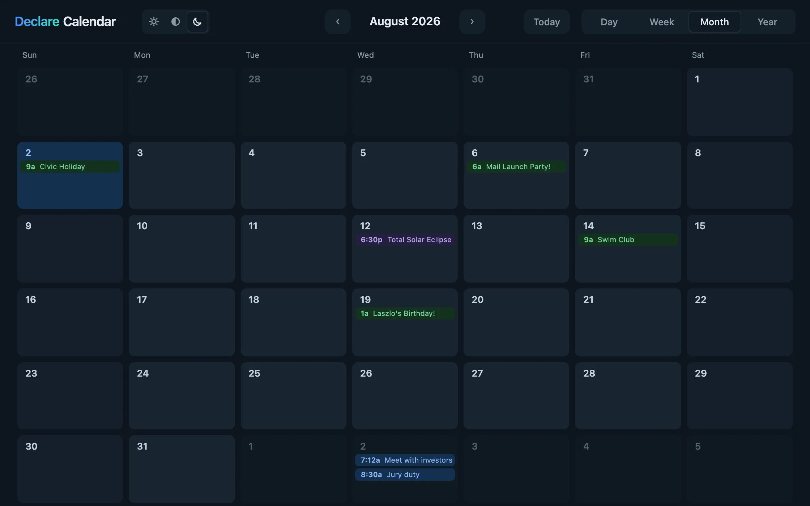
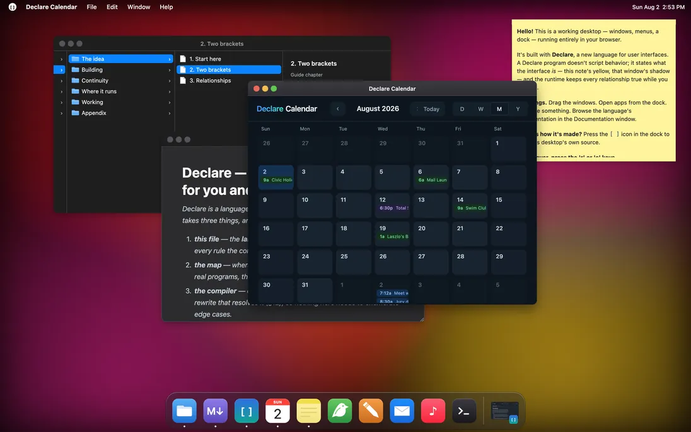
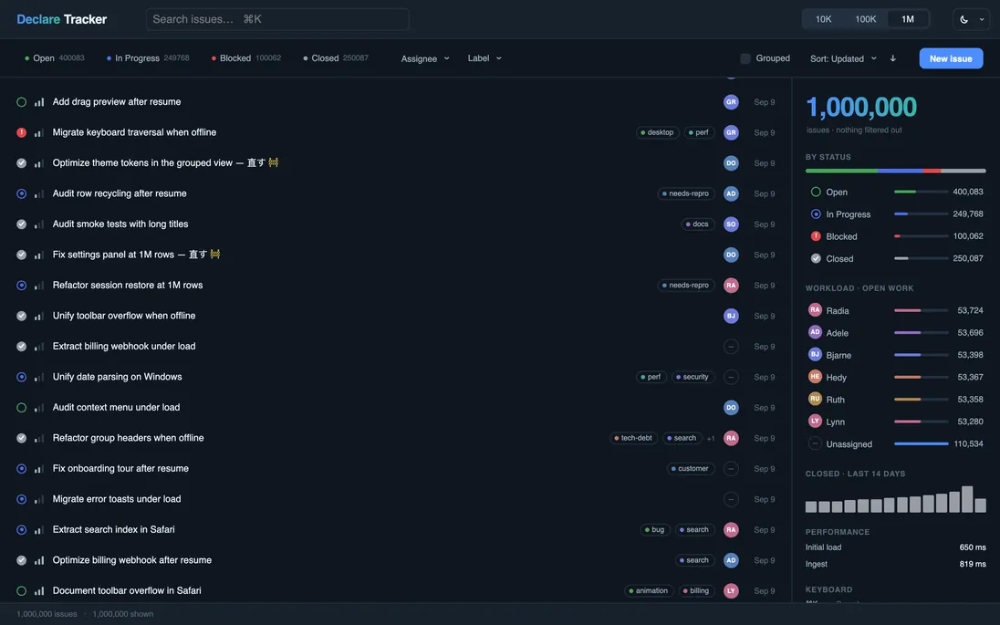
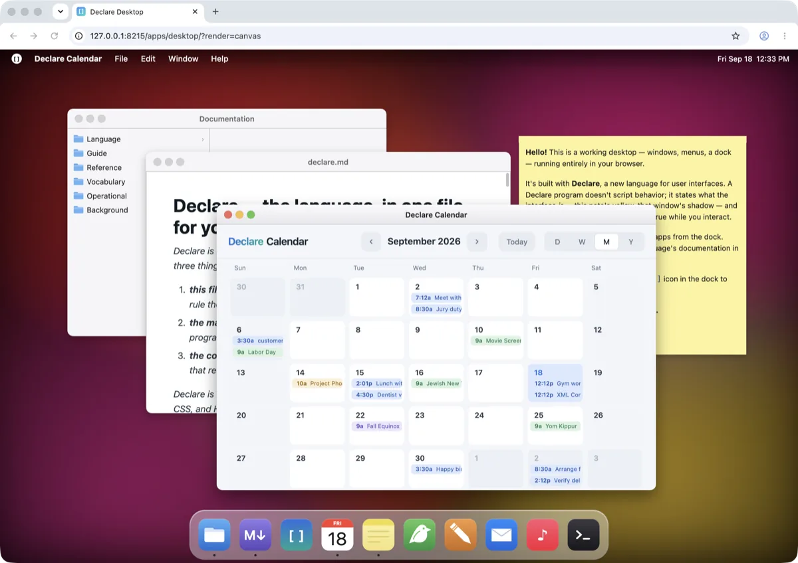
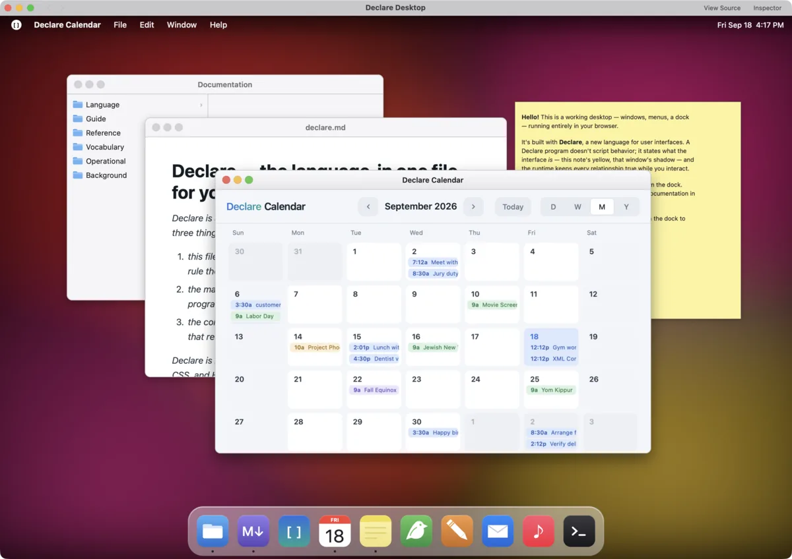

Just as SQL is a domain-specific language for database queries, Declare is a DSL for user interfaces — for taking the custom, fluid experience you have in mind beyond a prototype, into a real app: structured, verifiable, and with the design written plainly in its code.
This page is itself a Declare app.
Declare in 10 minutes →
Run the calendar →
The language, in one file →
A calendar that zooms through time, a desktop with real windows: complete programs, each readable end to end and checked by the compiler. Open one, or edit it live in the browser you’re using.
Day, week, month and year views are one surface, zooming continuously; a view doesn’t so much switch as become the next view, and every motion can be interrupted. It runs on real data: drag an event to another day, and it’s moved.
568
lines of code, plus 228 of comments — four views, zoom, drag and edit
177 KB
over the wire, gzipped — app (structure, logic, styling) and runtime
0
lines typed by hand — human-designed and directed, built with AI
Run Declare Calendar →
View & edit source →


Windows that drag, resize and minimize into live thumbnails, a magnifying dock, and apps running inside its windows, all in one program.
3529 lines — 2011 code, 939 comment · 264 KB over the wire · every pixel drawn from shapes, no image assets
View & edit source →

1,000,000 issues · search as you type · edit in place, with undo · virtualization built in
1508 lines — 983 code, 251 comment · 194 KB over the wire, before its data · no dependencies
View & edit source →
And more:
Weather →
Market Map →
Birds →
To-do →
Asteroids →
Declare was designed first for the people who make interfaces. Layout, motion, states, theming and drawing are the language itself, not libraries bolted on, so the experience you have in mind is something you can write down directly, and read back later as it was meant.
Rules
Data
Motion
Three things follow one value: the number, the bar’s length and its color. Click to change v and all three update together, because each is a relationship that stays true and runs every time.
Live, editable
Revert
40
click anywhere to change v
Declare comes with tools that help an AI get it right.
One installable skill: the language, the library, the conventions, the working loop, so there’s nothing to reconstruct from a repository. And declare-help answers any name or error code on demand.
Every diagnostic names the broken rule and the valid rewrite. Try it: change textColor to color in the panel above and read what comes back.
The Inspector can tell you or an agent why a live value is what it is, what it depends on, and what happens if you change it, read from the running app.
A formal six-rung ladder, from parse to pixels, is how an app is shown to be correct. Your AI climbs it one rung at a time. Each rung reports the issues it found.
Given the same brief, the same agent built a ticket-buying app twice. The Declare app was 1,279 lines to React’s 2,666, and its first build that ran passed all eleven hidden checks; React’s passed six. These are single runs, not yet a benchmark. Every run is in the repository.
The spec is small and the tools are strict, so there’s a lot less that can go wrong.
Built in Declare
·
View Source
·
Docs
·
The language
·
How it works
·
GitHub
·
MIT License
·
© 2026 David Temkin
Declare
Apps ▾
Learn ▾
About ▾
GitHub
Get started
Why Declare
AI writes most code now. You tell it what you want to build, and it uses whatever language it likes to get it done. Et voilà, the era of new programming languages is over. Therefore: English is the best, and final, programming language. Right?
I think that argument starts with the plain truth — programming languages don't play the same role they once did — but gets its conclusion wrong. Writing code is now nearly free, but trusting it is as expensive as it's always been. An AI writing React checks its work by resemblance ("this looks like the billion lines I was trained on"), but resemblance isn't correctness. Meanwhile, less and less code passes under human eyes. That leaves the language and its tools as the one reviewer that's always there. Handing the coding to a machine makes the language matter more, not less.
I started with two objectives.
Expressive. A language that can concisely describe a real interface: not just simple data entry screens, but fast, polished, custom-designed software meant to be used, even enjoyed, by actual humans. Views that become the next view, motion that carries meaning, layouts that answer to content and to the screen they're on.
Verifiable. A language designed to be learned, written, debugged and tested by AI, whose programs a compiler can check rather than guess at, without sacrificing human readability.
Most attempts to make code safe for machines make it duller for people. Declare doesn't accept that tradeoff. The features that make a program checkable (one tree for structure, style and behavior; every dependency visible to the compiler; one decider for each value) are also what make it short, and readable to the person who has to judge it. The whole language fits in an AI's context window, and in your head.
A well-designed user experience is a set of decisions: how it should look, how it should move, what should feel inevitable. Those decisions are yours. An AI can produce a standard-looking app easily, and in Declare it can produce one verifiably. What it can't supply is a custom-crafted design. Declare is for people who want to go beyond prototyping these experiences with AI, to building structured, verified, accessible apps with it.
That's why layout, motion, states, theming and drawing are part of the language itself, not libraries bolted on: a Spring on an attribute, a layout as a value a view holds, a mode as a state you're in or not. The continuous version of an interface is often less code than the discrete, screen-by-screen version. And, because a Declare program is one complete description — no separate stylesheet, no framework lifecycle, no build of a dozen files — the design you meant is written plainly in the code, where you, a colleague or an AI can read it back and see that it's still what you meant.
What an AI gets from a mainstream stack is corpus leverage: fluency by imitation, which is broad, shallow, self-contradictory and unverifiable. The other kind is comprehension leverage: a language small enough to hand to a model whole, regular enough that its programs can be analyzed rather than pattern-matched, and backed by a compiler whose every error names the fix, because the reader of those errors is as often as not an AI deciding what to do next. Corpus leverage arrives free with popularity. Comprehension leverage has to be designed in, and it's the only kind a new language can compete on.
There's research behind this approach: a small language handed to a model in context has beaten the same model writing Python (study →), and a compiler that explains its errors measurably improves a model's repairs (study →).
I built Declare the way it's meant to be used: eval by eval. (An "eval," in AI-speak, is a test drive with the AI at the wheel and me taking notes.) An agent that had never seen the language got a written application spec and the Declare download, and built the app while I watched how long it took, what it tripped on, what it found missing, how well its code read and how well the app worked. Another agent built the same spec in React. I've done this over a hundred times. You could call it a form of recursive self-improvement, except that what improves isn't the AI but the language. Languages usually evolve over years; Declare did it in weeks, with feedback from a user who never gets tired and writes down everything that confused it. The same ticket-buying app went from 48 minutes to build to 24, and compiler errors per build from 32 to 6. In the latest pair the Declare app was 1,279 lines to React's 2,666, and its first build that ran passed all eleven hidden checks; React's passed six. These are single runs, not yet a benchmark. The runs, in full →
Custom-designed experiences, as seen in the best native apps, have their own components and continuity, where one view becomes another instead of a sequence of screens. They've always been bespoke, locked to a platform, and can be wrong in ways that are hard to catch. This is also among the least machine-writable code there is, because the corpus for it is thin. Declare makes continuity, motion and custom components the grain of the language, and puts it where a compiler can check it. One example is the calendar, whose day, week, month and year views are one zooming surface, in about 600 lines. A human (me!) guided it; AI wrote it; the compiler, inspector and checker kept it honest.
I don't believe computing collapses into a chat window; we still need apps. There's a next generation of experiences beyond today's hand-crafted best, built on a foundation with continuity at its core, deployed as widely as a URL, and shaped by people with an idea of how software should feel, working with an AI at their side. Declare is built to find out what they make.
Where this came from
I co-founded Laszlo Systems and led the team behind OpenLaszlo — a declarative UI language, first shipped in 2002, that pushed right to the edge of what that era’s web browsers could handle.
What brought me back to UI development was Mesa, a zoomable canvas app I built without using a browser framework, toolkit, or higher-level language. Mesa renders a thousand live objects at a 60fps floor, even on a phone. It’s been positively amazing to see how fast today’s browsers have become — and how powerful and flexible today’s web platform is.
And yet the web as it actually stands is still, mostly, slow and clunky. Even brand-new sites. How can that be?
It turns out the browser isn’t what makes the web feel worse than a good native app. It’s what we’ve built on top of it. A lot of accumulated code — and a lot of accumulated habits — take their toll, and the interfaces that do escape them are hand-crafted, one at a time, by specialists.
In June I handed the original OpenLaszlo compiler to an LLM and got back a modern port that compiles any OpenLaszlo program perfectly, byte-for-byte.
Seeing those programs again through fresh eyes — and seeing how small and how fast the sites built with them are — I decided the language deserved to be modernized. Declare is what came out of that: a direct descendant of OpenLaszlo, with the core ideas intact, built on an entirely new foundation, and shaped to be written with an LLM.
Enjoy!
— David Temkin
Built in Declare
·
View Source
·
Docs
·
The language
·
How it works
·
GitHub
·
MIT License
·
© 2026 David Temkin
Declare
Apps ▾
Learn ▾
About ▾
GitHub
Get started
The language
Declare is a language for building application interfaces. This file is the language: every form the grammar accepts and every rule the compiler enforces. The compiler completes it — every error carries a code, a position, and the rewrite that resolves it (§12), so nothing here needs to enumerate edge cases.
Declare is new, and no LLM has been trained on it. It resembles React, CSS, and HTML in places, and this file is where those resemblances stop. Every complete program below is compiled by the test suite, so the examples are current by construction; where this file and the compiler disagree, the compiler is right.
The classes and their attributes are in the reference — npx declare-help <name> answers any of them by name. How to work with Declare, and where everything else is, starts at skill/SKILL.md.
One boundary makes the rest of this file readable. Every capitalized tag is a class — View, Text, and Image, but equally Dataset, State, Spring, and KeyListener. The language is the grammar that declares, instantiates, configures, and relates them, and that grammar is what follows.
A Declare program is a tree of nodes whose attributes are related to each other by standing expressions the runtime keeps true.
A constraint is a relationship, not a callback. Read a reactive value inside one and you are subscribed to it; assign to that value and everything that reads it updates. There is no re-render, no diffing, no dependency array, and no hook, because nothing was ever a render.
App [ width = 400, height = 140, fill = darkslategray, textColor = whitesmoke,
count: number = 0, // reactive state
col: View [ x = center, y = center,
layout: SimpleLayout [ axis = y, spacing = 14, align = center ],
Button [ label = "Add one", primary = true, onClick() { app.count = app.count + 1 } ],
Text [ text = { `Clicked ${app.count} times` } ]
]
]Click the button and the label updates; resize the window and it stays centered. You wrote no update logic for either, and there is nowhere to put any. Every section below is this same idea applied to structure, space, data, style, and time.
{ } is TypeScript, and only TypeScript. Bare values have their own literal vocabulary, and it stops at the brace: width = { 100% } is a syntax error, and a color inside braces is "#4169E1" or 0x4169E1, never bare #4169E1. (§2)count = count + 1 sets and notifies. There is no setState, no setAttribute, and no way to change a value without the cascade. (§5)[ ] tree never generates children from an expression, so React's {items.map(…)} and {cond && …} have no equivalent there: a collection comes from replication over a datapath, and conditional presence is visible. (Both are ordinary TypeScript inside { }, and a handler can build views with createView, just not in the tree.) (§7)app.width. The renderer makes what the browser's own features need (the tree a screen reader reads, the fields autofill fills) from what you declare: a role, a name, a purpose. Its elements are not an interface. (§6, §9)provided(…) finds the nearest value an ancestor provides (§9), and a key the nearest binding a view declares (§8).onLoad, onArrive, afterSettle). Time is only ever an input — a duration to animate over, a frame step to integrate by. (§5, §10)Two brackets carry the entire syntax. [ … ] holds a node's members — attributes, declarations, methods, children — and the bracket nesting is the tree. { … } is TypeScript, type-checked against every class's real API.
An attribute's value takes four forms, and the spelling tells you which:
| you write | it is | example |
|---|---|---|
| a bare value | a literal, set once | width = 100%, fill = navy |
| a bare list | a literal list, for an array-typed attribute | listenTo = ["delta", "done"] |
a { … } value | a live expression — a constraint | width = { parent.width - 10 } |
a :-prefixed path | a read from bound data — a datapath | text = :title |
A bare literal is the value itself, so a name is not one: fill = accent fails as a bare value. Reach a named value through braces — fill = { provided("theme").accent }.
Bare values have a small literal vocabulary the compiler owns: Lengths (100%), colors (navy, #336699), and keywords (center, x). Inside { } none of it exists. You are in plain TypeScript, an identifier means what TypeScript says it means, and the compiler never reinterprets it.
fill = cornflowerblue, // ✓ bare value, a named color
fill = { hovered ? 0x6495ED : 0x4169E1 }, // ✓ in braces, TypeScript number
fill = { hovered ? #6495ED : 0x4169E1 }, // ✗ no such syntax in TypeScript: "#6495ED"
width = 100%, // ✓ bare value, Length literal
width = { 100% }, // ✗ compute it instead:
width = { parent.width - 40 } // ✓A body is TypeScript, written as TypeScript writes it: ternaries, template literals, array chains, closures, casts (x as T, x!), annotations on locals and parameters, generics, and a method body's own type, interface, enum and class declarations. Everything type-level is checked, then stripped; what TypeScript compiles (an enum, a class's parameter properties), the compiler compiles. One limit, a compile error naming the rewrite: a value body is a single expression — statements live in methods.
A :path may also appear inside a { } body, and this is central rather than exotic: it is how anything conditional over replicated data gets written. text = { :on ? :title : "—" } reads the datapath exactly as the bare form does, then computes with it in TypeScript. Read { } as "TypeScript, plus datapath reads."
Two lexical notes. A "…" string ends at its line, in a bare value as in a { } body; a """ block is the form for long text. And a Dataset's literal body is strict JSON (§7) — the one place { } is not TypeScript at all.
Everything inside [ ] is a member, in one of five shapes. Two of them look nearly identical and mean different things.
width = 100%, // SET an attribute that already exists
x = { parent.width - 40 }, // SET it live — a constraint
text = :title, // SET it from bound data
label: string = "", // DECLARE a new reactive attribute
selected: boolean = false,
tint: Color = navy, // any value type, bare-literal default
count: number, // no default — undefined until written
rows: number[] = [], // an array, element-typed
panel: Menu? = null, // a class — the attribute holds an instance, or null
select() { selected = !selected }, // a METHOD
onClick() { count = count + 1 }, // a HANDLER — `on` + an event this node fires
onPointerMove(e: PointerEvent) { x = e.x }, // pointer handlers get a typed payload
draw(d: DrawContext) { d.fillStyle = "#4169E1" // a METHOD the view calls to paint itself — see below
d.fillRect(0, 0, 12, 12) },
bg: View [ fill = midnightblue ], // a CHILD, named — reachable as `bg`
Text [ text = "OK" ] // a CHILD, anonymousAny view can paint itself by defining draw(d: DrawContext) — graphs, gauges, iconography, marks no fill or font gives you. It is an ordinary method: View calls it from a constraint of its own (drawing = { record(draw) }), so it runs on invalidation and re-runs when what it read changes, never per frame — the same rule as any method a constraint calls. d takes the Canvas2D drawing calls (fillStyle, beginPath, moveTo, stroke, …); what it records, every renderer paints.
name = value sets an attribute that exists; name: Type = value declares a new one. Declaring is how reactive state enters a program; setting is how it is wired. A declaration's type is a TypeScript type — number, string[], "idle" | "busy", Map<string, Row>, { x: number; y: number }, [number, number], (id: string) => void, Row | null — naming TypeScript's built-ins, Declare's own (Color, Length, …), your classes, your schemas (§7), or a type a script block declares; object / array stand for a record or list of no declared shape, in a cast too. T? is Declare's shorthand for T | null, and takes ?.'s undefined as null. A type that a declaration cannot hold in place (a conditional or template-literal type) is named once in a script block and used by name. The one place a type meets the member syntax is a [ after it: glued and empty it is an array (w: Window[]); after a space it opens a named child (w: Window [ … ]).
A method's signature is typed, name-first: select() { … }, commit(v: boolean) { … }, quant(v: number) -> number { … }. Every parameter carries a written type — any type a declaration takes, an event payload among them (onPointerUp(e: PointerUpEvent)); c?: Menu, or Declare's c: Menu?, says the value may be absent, and the body must check. The return is written -> Ret or TypeScript's : Ret — a type's name (-> Week, -> Session[]), not a record written out in place: give a returned record a schema and return that. Omit it for a method that returns nothing. A computed value is still not a method but an attribute with a { } default, segIndex: number = { … } — an attribute stays reactively true; a method runs when called. A subclass's method, handlers included, replaces the base's of the same name, a built-in's own runtime methods (fetch, start, scrollTo) among them; super.name(args) calls the replaced one, wherever in the body it is written, or never.
Events from outside the tree come through a member you declare. KeyListener [ onKeyUp(e: KeyEvent) { … } ] hears the raw keyboard regardless of focus. There is no subscription syntax and nothing to unregister: the source is a child, so it lives and dies with the node that declares it.
Members are separated by commas; a trailing one before a closing ] is legal.
A bare name resolves outward through the enclosing brackets, innermost first — the brackets are the scope exactly as they are the tree. Each [ ] you are nested inside is a level whose surface is that node's whole member set, and the nearest level owning the name wins, at compile time. One consequence to hold on to: every view carries the built-in attributes, so a bare width always means this node's width — built-ins never resolve outward.
Three reserved words say it explicitly, and nothing else may take their names: this (the node the code is written on), parent, and app (the running application, from any depth — the home of the few values the whole app shares). Bare App is the class; app is the instance. A fourth, classroot, belongs to authoring a class and arrives in §4.
Every name the platform adds is capitalized: a class, a type with its builders (Stroke(1, red), Color.mix(a, b, 0.5)), a service (Focus), or a theme preset. A lowercase name is yours, the node's or JavaScript's, besides provided, measureText and escapeHtml.
A member is a property of its view, reached as JavaScript reaches one: toolbar.share, or by a name computed at run time, toolbar[name]; the two chain freely. Each bracket steps one level and names one member, else undefined. A literal name is checked like a path; one known only at run time cannot be.
Instantiate a class by naming it with a [ ] body; define one with class Name [ … ]. A class with no base is a view; any other base is named — extends Node for a class with no view, extends Dataset for a class with no view that holds data (a Dataset is a Node), extends Control or any class of yours or the library's.
class Chip [ height = 30, cornerRadius = 10, fill = darkslategray,
label: string = "",
width = { this.t.width + 20 },
t: Text [ x = 10, y = 5, fontSize = 12, text = { label } ]
]
App [ width = 400, height = 100, fill = black,
layout: SimpleLayout [ axis = x, spacing = 10 ],
Chip [ label = "one" ],
Chip [ label = "two" ]
]App is the one root, one per program; with width and height unset it fills its host. Any instance may declare its own members — state, methods, handlers — with no class at all, because the compiler synthesizes an anonymous subclass, and the instance remains a subtype of its base. Promote a one-off to a named class when you instantiate it twice, or when pulling it out keeps its parent readable. The same holds for what has no view: state and logic can live on the App, and when a group of it becomes a thing in its own right — the rules of one dataset's records, a service, a piece of machinery — it moves into a class of its own that extends Node, or Dataset when it is those records' own logic.
A subclass adds children; defaultPlacement says where they go. A subclass's children (and a use site's) are appended to the instance, after the base class's own. A class that is a frame around content names the child the content belongs in — class Sheet [
defaultPlacement = body, body: View [ … ] ] — and every subclass's and use site's children go into body, in order, and a layout: written with them goes too, arranging them there; the base's children keep its layout. A child can exist conditionally: exists = { … } builds it while true and discards it while false, in its place (visible keeps a hidden view built — a focus sink, a definition read by its parent).
Besides class, the top level holds script, include, use, theme, style, schema, ship, defaultFlags and declareVersion — the complete set, in any order, before or after the root instance; extends may name a class declared later in the file. script { … } holds free TypeScript — helpers, parsers, whole libraries — and may import ES modules, bundled at compile; script [ "file.ts" ] is the same block loaded from a file. A program's script blocks share one scope, in source order, and a constraint may call into script, opaquely (§5). A script runs on every host, so it uses only what all of them provide; one written for some hosts says so — script [ host = browser ] { … } — and the compiler refuses an unmarked script's host-only names (Structure). include
[ "path.declare" ] merges another file's top-level declarations, once. use [ Name ] keeps a class the build would otherwise drop, for code that constructs it by name (createView, §7). ship [ … ] says what a self-contained package must carry beyond what its source names (Packaging); defaultFlags [ … ] gives the program's own defaults for the platform's flags, such as render = canvas (defaultFlags); declareVersion [ "0.6.0" ] says which release a file was written for, and no program needs it. theme Name [ … ] and style Name [ … ] are named records of literal values — a token record, and the style of a run of text with no view (§9).
classrootclassroot is legal only inside the body of a class you are defining, and nowhere else — if you are not writing class Name extends Base [ … ], you do not want it. It names the instance itself, from any depth inside the class: the reach for a handler or a deep subview acting on the instance, and the explicit spelling when a nearer child shadows a bare name.
class WeatherTab [ selected: boolean = false,
label: string = "",
select() { selected = !selected },
header: View [
onClick() { classroot.select() }, // `this` here is the header, not the tab
caption: Text [ text = { classroot.label } ] // reaches the tab from a leaf
]
]A direct child of the class body can reach the same instance as parent, and that is legal — parent is the enclosing view, which for a direct child is the instance itself. The difference shows up later: nest that child one level deeper and parent now means the new wrapper, while classroot still means the instance. Reach for classroot when you mean the instance, and keep parent for when you mean whatever encloses me.
A { } as an attribute's value is a constraint: re-evaluated when, and only when, its inputs change.
x = { parent.width - width - 20 }, // stays 20 from the right edge
fill = { selected ? 0x4169E1 : 0x191970 }, // royalblue / midnightblue
text = { data.failed ? "Couldn’t load" : "Loading…" }Dependencies are extracted by the compiler. It reads your expression, reads through what it calls, and wires what it can name once. A read it can see but not name — through a closure's parameter, a local alias, or a value a method hands back — keeps that constraint on runtime tracking, where each read is observed as it runs. What it cannot follow at all is a compile error (below).
A constraint stays live through everything Declare it reaches. Call your own methods, chain array operations, read through a closure — every read inside all of it is a wired dependency, rebased onto what you passed, so { this.price(app.cart) } depends on whatever the price method reads of the cart. The analysis collects potential reads, not observed ones: { a ? b : c } depends on all three. A script { } function is the one opaque call: script is outside the reactive system, so { fmt(app.total) } depends on app.total — the values you pass — and never on what fmt does inside. Pass values, not nodes (a node reference never changes, so a node-typed argument is refused); a helper that should be analyzed is a method.
Reads are symmetric — a bare read is the tracked read. Only a change notifies: a write, or a constraint re-deriving, that lands on the value already there (the same number, string or boolean, the same object) wakes nothing. A new array or record is a change, even with the same contents.
A handler's writes do not take effect one at a time. When it returns, everything it changed is applied together — constraints re-derive, views appear and retire where data now says so, layout places, sizes update — one indivisible step, run to completion, called the settle. Nothing paints in the middle of one, and no time passes inside one: a fetch or a glide cannot be in a settle, only cause the next. This is why the world is never half-updated, and why history can count "one entry per settle" (§7). Animation is a user of it, not an exception: a Spring writes its attribute once per frame, and each frame's writes get a settle of their own — motion is many small settles, never one long one.
Inside a handler, the world you read is the world before your writes land: an attribute you wrote reads back as written, but nothing derived from it has moved yet. Almost always the right response is no response: state what should be true with a constraint, and it is true after this settle and every one after it. But some work is irreducibly a reading of the new geometry — aiming a camera at a view your write just caused to exist, measuring where something landed. For that, leave one named step on the far side:
addItem() {
app.d.set(["items", 0], { label: "new" })
afterSettle(app.showNewest) // runs once, when THIS settle's constraints rest
},
showNewest() { app.frameOn(app.list.first) } // the new row is real, placed, sizedThe step runs exactly once, when the constraints your handler moved have come to rest, before anything presents. What it assigns is settled in a further round of the same settle, as is what an onChange assigns; the settle ends when a round assigns nothing, and 100 rounds stop it with an error naming what kept it going. Constraint first, afterSettle second, and never for waiting — anything later is a value changing, which is what constraints are for.
Boot is the one settle with no handler inside it, so its close is delivered instead: onReady() fires once, on the App only, when the first settle has completed — tree standing, geometry computed, before anything presents, so what it does is in the first frame the user sees. Readiness is usually a value; keep onReady for the genuinely once-and-imperative: seed the camera, open the socket.
A { } can appear on either member kind from §3 — setting an existing attribute, or declaring a new one with a computed default — and one difference decides everything: who owns the value.
| you wrote | owned by its constraint? | reading it | assigning to it | reach for it when |
|---|---|---|---|---|
width = { … } — set an existing attribute | yes | subscribes to it | refused at runtime | the value is derived and should stay that way |
segIndex: number = { … } — declare with a default | no | subscribes to it | lands, and the formula is gone | you may want to take the value over later |
Either kind is worked out once and kept, and worked out again only when what it reads changes: reading one, however often, costs nothing. So a value that depends on several conditions names them (open: boolean = { … }) and reads the names, rather than nesting ? :; the compiler warns when choices nest three deep (DECLARE4025).
Use both; know which you wrote. One rule covers every case: derived state is never assigned — change its inputs instead.
One mechanism takes over a constraint-owned attribute without assigning to it. An Animator, a Spring, or a State override suspends the driver and resumes it, re-evaluated, on completion — the sanctioned path, and why a state may override a { }-owned attribute at all.
A constraint reads specific things, and the compiler must be able to follow every one. When it cannot, that is a blocking compile error — DECLARE7001, the residue, meaning the part of an expression no static reading can name — rather than a silent fallback. The diagnostic names the exact read it could not follow and the rewrite that resolves it. Three instincts account for most of them:
this.children.map(…). The number you want lives in the data, not the views: count the Dataset (§7).this[k]. Name the attribute, or move the lookup into a method the compiler reads through.total = { total + tax } reads like a harmless adjustment and is a cycle by construction. Derive from a base attribute, not the one you are setting. (A provided value avoids this: theme = { { ...provided("theme"), accent: red } } reads the ancestor's theme — provided(…) walks up, never to itself — so a subtree can extend the theme above it without a cycle.)script { } is foreign code — wholly outside the reactive system. It may hold arbitrary TypeScript: stateful helpers, caches, classes, whole libraries — but not the app's model (a derivation over its data is a method) or its look (a repeated color is a theme token). The compiler type-checks a script body but does not trace its reads: a call depends only on its arguments, and the function's own state is invisible — if a function's answer can change without your inputs changing, hold that state in a node. Two uses stay refused: a constraint reading a script let, and any body writing one — state that changes is an attribute. Handler code is under none of the reactivity rules above — it is ordinary TypeScript: locals, loops, switch. It reaches the world through members, not host globals: a request is a DataSource, a repeating call a Time, one later call afterDelay(ms, fn). A handler is synchronous (no async).
Which globals a piece of code may name depends on where it is written:
{ } bodies and handlers included: the ECMAScript built-ins (Math, JSON, Date, Intl, Number, String, Array, Object, Map, Set, RegExp, Promise, …), and URL, URLSearchParams, console, structuredClone, encodeURIComponent and decodeURIComponent.{ } body or a handler: fetch, the timers (setTimeout, setInterval, queueMicrotask, requestAnimationFrame), performance and globalThis. The compiler refuses each and names the Declare way: DataSource, Time, afterDelay.script { } block: all of the above, fetch, the timers and performance included, and the runtime's functions a body calls (measureText, the builders and Color), except those that answer for the calling node (provided, providedTextStyle, afterDelay).script [ host = browser ] { } block: window, document and the rest of the browser as well. An unmarked script runs on every host, so the compiler refuses those names there. The views a program draws belong to the runtime: they differ between renderers and don't exist on the Mac, so a script never looks them up or changes them. Whatever you'd reach into the DOM for is already a Declare attribute or class, so ask declare-help first.Each of x, y, width and height has one decider: the view, its parent's layout, or (a size only) its content. A size the view does not state is its content's — a Text's run, an image, its visible children's boxes, padding included — inside a layout too: unlike flexbox, nothing stretches without align = stretch. A child sized from its parent (100%, or a { } reading the parent's size) is not counted in the parent's size from its content, so a view sized by its children can't size them; they fill it by align = stretch.
A layout is an object — a library class or your own, with one method — set as the layout: member and swapped like any member. It places every child along its flow, across it only with align, and sizes the children that ask: a child tells it facts (flexes for a share of what is left, shrinks, a minWidth/maxWidth range) and never also states what the layout decides. Along the flow, 100% is the whole room, not what is left; a hidden child leaves the flow.
layout: SimpleLayout [ axis = y, spacing = 10 ],
layout: WrappingLayout [ spacing = 20, rowSpacing = 20 ]padding — one number, or [top, right, bottom, left] — gives a view a content box: x = 0, width = 100%, center and end mean that box for every child, laid out or not; { parent.width } still names the whole box, and paint (fill, stroke, cornerRadius) stays on it. stroke takes the same one-or-four shape, null for a bare side.
Stacking order is declaration order; later siblings paint on top. There is no z-index, so chrome that must float above everything is declared last (a menu, popover or dialog is a library overlay, which floats on its own).
A view has no overflow attribute. Ranges (minWidth, maxHeight, …) bound what a layout gives; elsewhere contentWidth and contentHeight say what the content wants, so a clamp is arithmetic.
height = { Math.min(contentHeight, 480) }, // grow to a cap, then stop
clip = true // hide whatever passes the capScrolling is the platform's. It moves a scroller on its own time — the user's hand, momentum, a glide — and the program never sets where a scroller is. It reads the facts the platform writes (scrollY, userScrolling) and makes requests the platform carries out when it can (scrollTo, scrollIntoView): clamped to the content, held until the pane can take them, waiting while the user scrolls.
Every scroller is a pane, the App included, and content scrolls only where it outgrows its room, so a layout that fits its window never scrolls. Choosing how an app scrolls is choosing whose content may outgrow its room. The App's pane is the host's own scroll — in a browser, the page — and only it gets what the host does for a page: a phone's bars collapse as it scrolls, and a pinch zooms it. So a column of content scrolls with the App, and a view that must stay on screen opts out with ignoreScroll (y = end at the foot). A region that scrolls on its own, a list beside a document or a map, is a pane inside it (scrolls = y), and a pane needs room it is given: one sized by its content just grows, and the page scrolls instead. scrolls = none says overflow is cut off (and, for the App, that the page does not bounce). clip = true clips children to the box; a child opts out of its parent's regime with ignoreLayout, ignoreClip or ignoreScroll.
Positions are literals. x = center and x = end, and the same on y, place a view against its parent — resolved reactively, exactly like 100%. The closed set is center and end; the start is 0. center puts a view's center (centerX, centerY: its box's middle unless it says otherwise) on the parent's middle, as align = center does. A label wants its ink centered — the cap band, not the font box with its uneven leading — so the library's TextLabel is a Text whose centerY is its capitals' middle.
The App fills its host by default, so App [ … ] with no size line fills the window and resizes with it, while an explicit size makes a fixed widget. Responsive code reads app.width; the App also carries the live host facts — viewport, colour scheme, pointer — as reactive attributes.
App [ minWidth = 480, minHeight = 420 ] sets a size floor: below it the app holds the floor and the host pans instead.
→ the layouts that ship: library/ · their attributes: the reference (npx declare-help <name>)
Data is JSON, held in the tree. A Dataset holds data — written inline, derived from other state, or fetched by a DataSource — as a named member of the node whose subtree uses it. A view's datapath points it at a place in that data, never at a value computed in { } (computed records are a derived Dataset). :path reads relative to it in the view and every member below, visible or not — a Spring's target, a Time's gate, a Node class on a record — and a path matching many records replicates its view, one instance per record.
App [ width = 420, height = 260, fill = midnightblue, textColor = gainsboro,
people: Dataset {
{ "rows": [ { "name": "Ada", "score": 90 },
{ "name": "Grace", "score": 80 } ] }
},
list: View [ x = 20, y = 20, datapath = { people.value },
layout: SimpleLayout [ axis = y, spacing = 10 ],
View [ height = 20, datapath = :rows[], // one instance per record
n: Text [ width = 150, text = :name ],
s: Text [ x = 150, text = :score ]
]
]
]The [] suffix is what replicates. datapath = :rows[] says this path matches many records, so make one instance of this node per record; without the brackets, :rows is an ordinary read of whatever is there, and [] may appear only at the end of a path. So an attribute on a replicated node reads that node's own record; a field of the record above reaches it through a member declared where that record is current: class Team [ team: string = { :name }, Text [ datapath = :members[], text = { :name + ", " + classroot.team } ] ].
Between those, a path may select: :path follows JSONPath (RFC 9535) over the shipped subset — [0], [-1], [1:4], [*], ['quoted key']. So :rows[*].label is every row's label, and :rows[2:8][] replicates exactly that range, each instance cursored at its real index. :@ is the record itself, and [( expr )] a key computed in TypeScript — :@[(field)].
A Dataset's literal body is strict JSON — quoted keys, no trailing commas. The replicated node is anonymous, but names inside it resolve per instance. Identity is inferred — a record's id field is its identity by convention, so reconciliation reuses instances across sorts, filters and edits with nothing declared; when identity lives under another name, identityKey = :email on the replicated node says which. An instance reads its record's index in the array as rowIndex, a fact, so records carry no position fields.
Count the data, not the tree. A Dataset's .value is the parsed data, so a count is ordinary TypeScript on it, never a walk of rendered rows.
A DataSource is a remote resource whose lifecycle is reactive state — data: DataSource [ url = "data/events.json" ]. Nothing loads on its own unless you set autoFetch = true; forgetting .fetch() is the silent first bug, and onInit() is the usual place for it. Screens then derive from the resource (shown = { data.loaded }) rather than being toggled. An optional schema = [ field: type, rows[]: [ … ] ] declares the response's shape: it validates the payload on receipt — so malformed data yields .failed rather than undefined three constraints deep — and lets every :path be checked against the shape at compile time. Without one, paths are dynamic: an unresolved :path yields null and the bound attribute falls back to its default. The request's own parts — method, body, credentials, headers — are ordinary reactive attributes, so a write is a DataSource too: method = "POST", a body, .fetch() from the handler, onLoad() for what follows the reply, onError() for what follows a failure — whose failure says why, and so whether a write went through (rejected: no; unreadable: yes; a timedOut, networkError or serverError: unknown). A request silent for timeout seconds is given up.
A schema is a named type, in the classes' namespace — declared once at top level, used in any type position. schema Task [ id: string, done: boolean, status: "open" | "closed", note?: string ] is then a type like any other (sel: Task? = null, advance(t: Task) -> Task, a field of another schema — owner: Person) — and there, as for a class or View, a trailing ? is what lets it be empty: Task? may be null, Task never is, a dataset declares the shape of its data with it (schema = [ tasks[]: Task ], or schema = Task[] for a bare-array response), and its .value is then typed — nest.value.tasks is Task[] in every { } body, so a misspelled field dies at compile time and the as casts go. The runtime enforces the same declaration at every boundary, the mutation verbs included. The schema grammar is the subset of TypeScript that JSON data can carry, so one declaration is checked by the compiler and enforced against live data; TypeScript's spellings of a field are the same field (tags: string[] is tags[]: string, km: number | null is km?: number). Extra keys always pass: a schema declares what the program relies on.
Two-way binding is opt-in, with <->, on what a class hands back through commit — a control's value, an overlay's shown, a Disclosure's open. Checkbox [ checked <-> app.muted ] is shorthand for checked = { app.muted } plus commit(v) { app.muted = v }. The place is a datapath (:title, against the nearest enclosing datapath), { :@[(name)] } for a field chosen by name, or an attribute (app.muted, classroot.size). The types must match, and the element may not also declare commit: a conversion is the pair written out. A constrained value with no commit is a compile error, since every change would be refused.
Datasets are mutable from handlers — :done = v writes the record under the cursor; d.set(path, v), with insert, removeAt and move for collections, writes anywhere. A path is a segments array (["rows", 0, "name"]) or a JSON Pointer string (RFC 6901 — "/rows/0/name", and "/rows/-" appends). A write wakes exactly the constraints that read the changed region.
A derived dataset recomputes from its inputs — cal: Dataset [ contents = { app.buildModel() } ], a method the compiler reads through; with a schema, its .value is typed. One that selects — filter, sort, group — holds its source's records, so a row bound to it writes its record as anywhere; what its code made is read-only. To add a computed field to a record, wrap it, don't copy it: { ev: e, lane: n } holds the record itself, and a row bound through :ev edits the source.
Records of different kinds are different classes — classFor = { :kind == "heading" ? Heading : Item } on the replicated node; what state a row is in stays a State.
Large collections virtualize on one word. virtualize = true on a replicated node builds only the rows near the viewport and leaves the rest logical — same records, same paths, same behaviour. It is a boolean, off by default — full materialization keeps browser find working over every record. Nothing else to write: no row heights, no scroll wiring, no keys.
When structure is genuinely imperative, build it from a handler: parent.createView(tag, props) instantiates a class by name into the receiver — a full citizen, and the parent's arrangement and auto-size take it in on arrival. Its pair is view.discard(): one verb unlinks the view, retires its whole subtree, and re-packs what it leaves behind. Reach for replication first — it reconciles, keys, and tears down for you — but the imperative door is open (use [ Name ], §4, keeps a string-named class in the build).
Data that keeps arriving is a stream — EventStream and Socket, connected exactly while active and a url say so, delivering onMessage and a reactive last. Same lifecycle shape as a DataSource, and nothing to unsubscribe.
→ Dataset and DataSource attributes, Stream/EventStream/Socket, View.createView, View.discard: the reference (npx declare-help <name>) · paths, selection and editing: the data chapter · virtualization at scale: collections
There is no router. location is the app's slice of the URL, as one two-way reactive string the host seeds before first settle, mirrors outward, and writes back on back/forward. A view that manifests a location declares it with shows; a place inside one is named with anchor; and any view becomes a link with link — one reference string, the same one an authored Markdown href carries:
home: View [ shows = "home",
pill: Text [ text = "Why", link = "#why" ], // a destination
faq: Text [ text = "The note", link = "#story" ], // an anchor — its location DERIVED
repo: Text [ text = "GitHub", link = "https://github.com/example" ]
],
why: View [ shows = "why",
note: View [ anchor = "story", width = 200, height = 80 ]
]Because references are declared rather than assembled, the compiler gains a registry and checks every one at build: a typo'd #stroy is a compile error naming the real names. A linked view realizes a real <a href>, so ⌘-click and copy-link work, and the build's crawler walks the same edges — which is what makes a deep link indexable.
Arrival is one operation whatever caused it, so a link, a prose href, a pasted URL and the Back button are the same event, and an app answers it in one place: a hook to transform or veto the reference, and a handler delivered the view it names once that view exists. Undeclared, arriving scrolls; declaring the landing replaces that with your own idea of showing, a camera or a pan.
Location is the app's shareable coordinates — what a recipient should see when handed the URL, nothing more; a draft or a session's working values are ordinary attributes. Between those two sits a third kind, state the Back button should undo but a stranger should never see, and it has its own attribute: waypoint, location's twin, carried in the history entry and never in the URL. A history entry is the pair, one per settle in which either changed, and one Back restores both. The dividing test takes five seconds: would you hand the value to a stranger? Yes → location. No, but Back should undo it → waypoint. Neither → an ordinary attribute.
→ link/shows/anchor, arrival and the crawl: the reference (npx declare-help <name>) · the URLs chapter
Handlers are methods named with an on prefix, answering this node's own events: onClick, the pointer and touch families, onKeyDown and onKeyUp on the focused view, and onInit after construction. onChange answers the values a node names in trackChanges = [ … ]: it fires at the close of each round of a settle in which one of them moved, once — onChange(e: ChangeEvent), e.changed one ValueChange (name, previousValue, currentValue) each: for a state change the program must act on, never to follow a value (a constraint) or to move one (a Spring).
A key is looked up outward, like a provided value: from the focused view through its containers to the App, the nearest keyBindings record naming it takes it — ({ key: "Ctrl+S", command: "save" }) runs that view's method, and a false return hands the key on; a menu item's or button's command is looked up the same way. keyBindings is the one attribute that adds up across class layers instead of replacing — a use site's records come first, its class's still apply — so your bindings never cost a Button its Space and Enter. An onKeyDown hands the keys it doesn't take, Tab included, to super.onKeyDown(e).
Pointer input has two layers. The raw layer — onPointerDown/Move/Up (every move, hover too), the multi-finger touch family, and onWheel — reports what the pointer physically did. The resolved layer — onClick, onDoubleClick, onHold, and onDragStart/onDrag/onDragEnd — reports what the user meant, decided by watching the gesture.
Pointer, not mouse: one handler serves a mouse, a fingertip, and a pen, and it fires at once for each — there is no compatibility event and nothing to fall back to. onTouch… is the separate multi-finger stream, for when you need the finger list rather than a point.
onClickactivates,onPointerDownmanipulates.
Reach for the raw layer to run a command and it misfires on touch, where a finger landing on a button may be starting a scroll. A press is a click or a drag, never both: a view that takes no clicks drags from the press, one that does once the press wanders. A view declaring onDoubleClick hears its first click at once, its second as onDoubleClick. Every pointer event carries its point both ways: x/y in the view's own coordinates, and rootX/rootY in root space — the frame a drag reads, because it does not move with the dragged thing — with deltaX/deltaY the root-space movement since the press.
One fact a drag handler must not miss: a drag taken back — Escape, a system interruption — ends in onDragEnd with e.canceled true. Commit only when it is false.
The browser owns every gesture until a view claims one — and declaring the handler is the claim, taking exactly what that handler needs to fire and nothing more: a drag event claims the single-finger drag over its view and subtree while pinch stays the user's, the raw touch family claims every finger (the app then owes its own zoom), onWheel claims the wheel stream — trackpad pinch included, arriving with e.pinch true — and a scrolling view is the opposite move, delegating its panning to the browser. Claim the least you need, on the smallest view that needs it; claiming at the App is legitimate exactly when the app is the surface — a map, a canvas, a game taking full gesture control.
visible is presenceA view at opacity = 0 is invisible but entirely present — it holds its room in the layout and still takes clicks, subtree included, as CSS opacity does: the natural press-catcher, a scrim behind a modal.
visible = false is the other tool, and it is the stronger one: it removes the view from input and from its parent's layout and auto-extent. So a fade that should end in absence is visible = { opacity > 0 }, while flow content that merely fades in should stay visible and let opacity do the work. pointerEvents = "none" is the third, for a view that should be seen and not touched. A view takes the pointer when it has declared an interest in it — a handler, a link, a tooltipLabel, or a scrolls axis, since a scroller answers drags and wheels with scrolling — and content behind such a view is not reachable through it.
Every view carries two read-only intrinsics. hovered is true while the view sits on the live hit chain — the topmost visible view under the pointer, plus its ancestors — so it is occlusion-correct, and it is always false on touch. pressed is true from a pointer-down on the chain until release. Read them anywhere a value goes, including as a state's condition (§10):
fill = { hovered ? 0x4169E1 : 0x191970 } // royalblue when hovered, else midnightblueOn a view that declares disabled (every Control), both are false while it is disabled, and pressed is also true during a keyboard press — so a control styles from the same pair. Declaring or assigning either is refused, the same guard §5 describes.
Having no CSS (§1) is also what makes a non-DOM renderer possible. Your CSS knowledge transfers: colors, font stacks, and shadows read the same. The names do not. A border is a stroke, rounding is cornerRadius (one number, or [topLeft, topRight, bottomRight, bottomLeft] to round only some corners), and borderWidth, boxShadow, and a box's outline do not exist.
What replaces the cascade is provided values: provided("name") reads the value the nearest ancestor makes available under that name, and providing is setting a value on a node — no keyword. The text face — fontFamily, fontSize, fontWeight, textColor, letterSpacing — works this way (each lives on Text, defaulting to provided(…), so setting one on a container provides it to the runs below), and so does theme, a token record every color in an app should name once.
A typeface is an object in the tree, like an Image — brand: Font [ FontFace [ … ] ], usually on the App — and fontFamily takes that object as its value. So a face is a value like any other: choosing one is an assignment, and text, layout and drawings follow a face landing with no code of yours.
theme = { app.systemDark ? SanFranciscoDark : SanFrancisco }, // on the App: PROVIDE a preset, light or dark
fill = { provided("theme").surface }, // READ it anywhere below
panel: View [ // on a DESCENDANT, provide a modified one
theme = { { ...provided("theme"), accent: 0xCC3333, // every provided("theme") below reads this;
accentHovered: 0xB82E2E, accentPressed: 0x9E2828 } } // a role changes with the states named from it
]provided(…) is the one new construct — an explicit up-the-tree read, bare in [ ] (like Gradient.linear(…)) or a call in { }. It is explicit on purpose: it reaches past this node, and a non-local read is worth showing. You rarely write it — Text and the library widgets read the face and theme values for you; you write it where your own code reads a value from up the tree. A read that finds no provider falls to an optional default (provided("theme", SanFrancisco)), else throws, naming the value.
Start from a library preset — each a light record with a …Dark companion, in scope by name — and spread to change a token; the standard library reads specific token names (npx declare-help
"theme tokens" lists them), so build from a preset, not an empty record. A token's relatives share its name (accent, accentHovered, accentPressed, accentTextColor): change a role, change them with it. Declare your own with theme Brand [ … ], a top-level record like a style bundle. The { { … } } is not special syntax: the outer braces open the constraint, the inner ones are a TypeScript object literal. A token read from provided("theme") must be one some theme declares — a preset, the library defaults, your own theme, or a record your theme = … writes — so a misspelled token is a compile error.
A style bundle is a named record of literal text attributes — the style of a run of text that has no view, which a <span class> inside HTMLText/Markdown wears. Like a theme record it holds literals only: it has no place in the tree, so nothing in it can depend on where it is used, and its name is a value in any { }, typed by the fields it sets. A look that follows the theme is written where it is used. To reuse a look across whole views you subclass instead (class PriceTag [ … ]).
style Keyword [ textColor = #C678DD, fontWeight = bold ] // a <span class='Keyword'> in prose wears itRich-text content can also carry views: inside HTMLText/Markdown, a self-closing tag that the inherited tagViews map names (tagViews = { { Chip: Chip } }, then <Chip label='docs'/>) places one real view of that class in the flowing line, its attributes converted by their declared types. With no map, no tag is a view. A <span class> remains a style; a tag is never one.
Precedence is fixed: a value set locally always outranks a provided one — a Text that sets its own fontSize ignores the region's, and a provided value is a default a node overrides, never a rule that fights your code.
Both halves of this section do the same thing: declare the destination, not the transition.
A state is a named, reversible bundle of attribute overrides applied while a condition holds.
App [ width = 360, height = 200, fill = black, textColor = whitesmoke,
card: View [ x = 30, y = 30, width = 300, height = 70, cornerRadius = 10, fill = midnightblue,
Text [ x = 20, y = 20, fontWeight = bold, text = "Summary" ],
open: State [ applied = { hovered }, height = 140, fill = steelblue,
Text [ x = 20, y = 50, width = 260, textColor = gainsboro, wrap = true,
text = "height, color, and this whole line arrive together" ]
]
]
]While the condition holds, the overrides — and any children declared inside the state — apply; when it lifts, everything reverts. The "set it on enter, forget to unset it on exit" bug is unrepresentable, because an attribute's value is a pure function of its base plus the active states. That is what lets states compose and interrupt. When two active states override the same attribute, the later declaration wins.
A state overrides its own element's attributes only. It cannot reach into a child — top.bg.opacity = 0.5 is a compile error, because a member always sets its own element's attributes. Those are the attributes it declares: a value it only provides to its contents (fontSize on a View) is not one, so the condition goes in the value, fontSize = { large ? 20 : 16 }. To coordinate several views from one condition, declare a state on each of them reading the same flag, or give the child a constraint that reads it:
bg: View [ opacity = { app.open ? 0.5 : 1 } ], // the child derives
bg: View [ dim: State [ applied = { app.open }, opacity = 0.5 ]
] // or owns a stateInside a state, an override is the view's. Its value is computed on the view it changes, so this, a bare name and parent mean what they would written on that view: height = { width / 2 } is half the card's own width, and parent is the card's container. The children declared in a state mount onto the view, and read it the same way. The state's own members — applied, anything it declares, onApply/onRemove — are the state's: there this is the state and parent the view, so applied = { parent.expanded } reads the card's own flag. A method written in a state is a compile error, since a state changes attributes and children, never what a method does.
A state is driven by its condition (applied = { … }) or imperatively by the verbs — apply()/remove()/toggle() from a handler. One or the other: the gate owns applied, so a gated state changes when what the gate reads changes.
A Spring drives one attribute toward a reactive target. Declare where the thing belongs and the spring finds the path, so a change of target mid-flight is a new destination and interruption needs no code.
slide: Spring [ attribute = x, to = { on ? 340 : 20 }, stiffness = 170, damping = 20 ]Motion is the one place time is legitimately an input (§1, nothing waits): Animator for a value that changes over a duration, Spring for one that moves toward a target — the house idiom — and Time for the clock itself — its facts (now, minute, …) are inputs a constraint derives from, and its onTick(dt) at tick = frame is the one per-frame handler, there only to integrate, the previous value being the input; a per-frame onTick that ignores dt is polling. A timing rule — a debounce, a delayed dismissal — is afterDelay(ms, fn), owned by its node and cancelled with it; a period is Time [ tick = 5000 ]. (Finishing after your own change has landed is neither — that is afterSettle, §5.)
Because states, springs, and layout all sit on one reactive core, arrangement animates: spring a few geometry scalars and every constraint derived from them moves in lock-step.
→ State, Spring, Animator, Time attributes: the reference (npx declare-help <name>) · the idiom at scale: apps/calendar/calendar.declare
Declare ships a standard library of classes in library/, written in Declare itself with no privileged API underneath. It auto-includes by bare tag — no import, no module ceremony — its classes read the provided theme, and focus behavior (Tab traversal, activation, a traveling focus indicator) is provided undeclared. Check there before building a control by hand; one you build extends Control, which makes it focusable and keyboard-activated, makes its hovered/pressed respect disabled, and routes pointer and keys alike to the press() you override.
Two contracts are worth learning because your own classes should obey them too.
The value pattern. A control's value is a plain reactive attribute, in one of two forms: standalone, where the control owns its state and you read it by name; or owned by your state or your data, deriving down and delivering up — the pair, or <-> for it. The pair is the §5 rule at work. A control's default commit writes its own attribute, so checked = { app.muted } with no commit override makes the person's change an assignment to a constraint-owned attribute — refused (§5). Override commit and the change goes where the value actually lives.
Editing, the same for every value control (ValueControl): the person's change is put to admit(v) before it appears (return what to show, or null to refuse), then shown and handed to commit — after each change, or once at the end with commitOn = "end". While an edit is open, the control shows the person's change, not your value, so a commit that clamps doesn't fight them; when it ends (they leave, release, press Return; a field's Escape cancels) it shows your value. Any other change to your value ends the edit. validate and required only judge. A control of your own reports with edit(v) and draws from shown.
Checkbox [ label = "Mute", checked = { app.muted },
commit(v: boolean) { app.muted = v }
],
Slider [ value = { app.volume },
commit(v: number) { app.volume = v },
disabled = { app.muted }
]What a class arranges, it takes as records. If the class arranges it — menu items, a dialog's buttons — it takes plain record arrays and hands the choice back through a method. If you arrange it, it is not a class's feature at all: it is views, a layout, and replication.
→ what ships and how it is built: library/ · each class's attributes: the reference (npx declare-help <name>)
Every diagnostic carries a code, a line and column, and the fix. Apply exactly the named fix, change nothing else, and compile again. All independent errors in a phase are reported together, and typechecking of every { } body is part of every compile.
The formatter (npx declare-format) owns the house style; run it rather than hand-aligning. What it cannot decide for you is naming — camelCase — and that a leaf goes on one line, which most of a UI is.
A running program answers questions about itself. A clean compile means the compiler found nothing wrong, not that nothing is wrong: layout, fonts, paint, and input routing do not exist until the program runs. __declare.explain(path, attr) answers why an attribute holds its value, giving the expression, the read-paths it was wired to, and their live values. (It is development tooling: a production build ships a stub unless you pass declarec --debug.)
Built in Declare
·
View Source
·
Docs
·
The language
·
How it works
·
GitHub
·
MIT License
·
© 2026 David Temkin
Declare
Apps ▾
Learn ▾
About ▾
GitHub
Get started
Get started
Open Claude Code — or another coding agent — in an empty folder, and tell it what you want, for example:
Write me a kanban board using Declare, here: https://github.com/davidtemkin/declarelang
Write me a personal budgeting app using Declare, here: https://github.com/davidtemkin/declarelang
Provide any required permissions.
In 10–15 minutes you'll have your first Declare app. That's it.
Cloning the repository gives you everything: the toolchain you build with, the docs and example apps, and Declare's own source to read. For a project of your own, install Declare as a dependency instead (Embedding Declare in a project).
git clone https://github.com/davidtemkin/declarelang.git && cd declarelangGet the repository.
npm installInstall the toolchain's dependencies (TypeScript, esbuild, and the Chrome driver the checking tools run on). The clone ships prebuilt — no build step before first run. pnpm works too — the repo pre-approves esbuild's install script.
npm startStart the dev server. It prints its address — http://127.0.0.1:8200/ unless that port is taken, in which case it says so and names the next (PORT=8201 npm start). Browse to any .declare file's URL under it and the server compiles and returns the running app.
Write a program to my-apps/hello.declare and browse to it under the server's address — http://127.0.0.1:8200/my-apps/hello.declare on the default port. The program URL is the app's address.
Start with Declare in 10 minutes, a twelve-screen tour of how Declare puts things on the screen, with a live stage for each idea.
The Declare docs take it from there, in four parts:
Built in Declare
·
View Source
·
Docs
·
The language
·
How it works
·
GitHub
·
MIT License
·
© 2026 David Temkin
Declare
Apps ▾
Learn ▾
About ▾
GitHub
Get started
FAQ
Declare is a programming language for user interfaces — a domain-specific language, the way SQL is a domain-specific language for querying data. You describe an interface as a tree of views with attributes; any attribute can be a live expression, and when the things it reads change, everything that depends on it updates. All real logic is ordinary TypeScript. Programs compile in the browser or ahead of time, and one program renders to the DOM, directly to pixels on a canvas, or as a native Mac app.
Because most of what makes UI code hard isn't your application — it's the plumbing. In Declare there is no render lifecycle to manage, no state synchronization to orchestrate, no CSS cascade to fight, no build pipeline to configure. An application is a readable tree of declarations: the flagship calendar — four views, continuous zoom, drag-to-reschedule — is about 600 lines of code you can read end to end. Given the same brief, an agent's Declare app came out at half the code of its React app. And Declare is built for the era when much code is written by machines: the language is small enough to hand a model in its entirety, and strict enough to verify what comes back.
Declare is at its best where an interface has to be designed, not just assembled: custom, fluid experiences of the kind you find in the best native apps — calendars, editors, dashboards, product sites — where views become one another and motion carries meaning. Everyday apps come with it: forms, lists, settings screens and admin tools are what the library's controls are for, and content-heavy apps work well (Markdown rendering is built in). Everything on this site is a Declare program: the homepage, the documentation, the calendar, the desktop.
An AI can produce a standard-looking app easily, and in Declare it can produce one verifiably. A custom experience is a set of decisions — how it should look, how it should move, what should happen when — and those come from human judgment and direction. What Declare changes is how directly those decisions can be expressed in code: layout, motion, states and theming are the language itself, so what you meant stays legible in the code, and the AI that writes it, the compiler that checks it and the colleague who reads it later are all looking at the same design.
Yes, with effort. Windows that drag, resize and layer; minimizing into live thumbnails; a magnifying dock; menus that follow focus; other programs running inside windows. In a mainstream web stack each of those is usually its own library or its own project, and keeping them coherent (focus, stacking, hit-testing, animation that can be interrupted) is where the effort goes. In Declare they are the language and its library, and the desktop is one program of 2,011 lines of code. That is why it makes a good stress test for any UI toolkit.
Time and change live in the language instead of being bolted on:
{ } expression; the compiler works out what it depends on, and it stays current. No re-render ceremony, no manual subscriptions.Control and yours takes clicks, taps, focus and keys exactly as theirs do, so there is no cliff between using a component and building one.draw(), clipping to any shape, filters and backdrop blur are attributes of a view, alongside its layout and motion, not a separate canvas or effects layer.datapath), and two-way binding connects editable fields to the data they edit.It's a language, not a framework inside JavaScript. In React and its relatives, the UI is a function you re-run: the framework diffs the output and patches the page, and you manage the machinery (hooks, memoization, effects) that keeps re-running affordable. In Declare, the UI is a standing structure: values flow through it when things change, and nothing re-renders because nothing was ever a render. There is also no HTML/CSS/JS trinity: structure, style, and behavior are one tree in one language. Its nearest relatives are declarative-tree systems like SwiftUI and QML, but Declare is web-native, compiled, renderer-independent, and uses TypeScript — not a new scripting dialect — for logic.
The compiler parses the declarations, statically extracts every constraint's dependencies, type-checks every { } body as real TypeScript against every class's typed API, resolves the components you use (the standard library auto-includes by name), and emits a self-contained program. The benefits: errors surface before the program runs, with messages that name the fix; reactivity is derived by the compiler, not guessed at runtime, so behavior is predictable and analyzable by tools; production output is small; and programs are data; the same compiler powers the documentation system, static extraction for crawlers, and live editing. The compiler itself runs in Node or in the browser.
The [ ] structure is Declare; everything inside { } — expressions, event handlers, methods — is ordinary TypeScript, type-checked with full knowledge of every class's attributes. There is no new expression language to learn. The declarative layer contributes structure and reactivity; TypeScript contributes logic, and everything you (or your model) already know about it carries over.
A reusable view is a class: class PriceTag [ … ]. Its attributes are its public interface, and it reports back through events it declares. Composition is just nesting: your classes are used exactly like built-ins, including replication over data.
No. Styling is part of the language itself: paint attributes on views (fill, cornerRadius, stroke, shadow, text styles), theme records that reskin an entire subtree from one place, and named style bundles a subtree can switch between at runtime. Your CSS knowledge transfers — colors (named or hex), font stacks, shadows all read the same — but there is no cascade, no specificity, no selector debugging. This is also what makes renderer independence possible: the canvas renderer couldn't consult a stylesheet the browser owns.
Side by side, yes; interleaved, no. A Declare app embeds in any page — including a React page. And inside a Declare program, the DOMIsland view hosts foreign content — a video player, a code editor, a React widget — in a box the Declare tree sizes and positions. What you can't do is put a React component inside the Declare tree as if it were a Declare view, or vice versa. The boundary is always an island, which is what keeps both sides comprehensible.
No router is needed: the URL is just an attribute. Declare location on your app and it follows the address bar. Setting it navigates, Back restores it, and a deep link is simply its starting value; the rest of the app derives from it like any other value. In the docs on this site, #guide/14-data opens that chapter directly. Deep-linked pages are crawlable too.
At build time, the compiler runs the app headlessly and bakes its content into the page as plain HTML: real headings, paragraphs and links. Crawlers and AI readers get that; people get the live app. No server needed: this site runs on GitHub Pages.
Because the compiler runs in the page, the page can edit and re-run itself: every sample on this site is live-editable — change the source and the app re-renders as you type. It restores view-source culture: "View and edit source" on any app here opens the viewer — a highlighted reader, the verbatim source, and a live-edit tab (?viewer=edit on the program's URL). And it means development needs no build step — the dev server and the browser use the same compiler with byte-identical output. For production you don't ship the compiler: the declarec build precompiles everything into a small artifact, no compiler aboard.
One program renders through managed DOM elements, directly to a single canvas, or in a native Mac host — same tree, same layout, same input handling, the three held to each other by a conformance suite (append ?render=canvas to any app URL to see it). The Mac host is a native macOS application, AppKit layers in place of DOM nodes, with the runtime's kernel linked in natively; you build it from the repository with one command (npm run build:mac). What this buys: the language owns its semantics, so no DOM assumptions leak into your program; the canvas path suits environments where a DOM isn't available or isn't fast enough; and future renderers can be added without rewriting applications. Programs also run headlessly — no screen, no renderer at all — which is what powers static extraction and testing.
Concretely, measured from the deployed production artifacts:
DataSource fetches at run time.declare-profile, or the Inspector while you use the app) says which of your rules ran, how often and for how long, what each class cost to build, what drawings cost the GPU, and how long each frame took to reach the screen — in the program's own terms, its classes, attributes and source lines, never the runtime's internals. It runs in the browser or the Mac host.Live numbers are on the homepage, measured from the deployed artifacts themselves.
When machines write the code, the properties that matter change. Familiarity matters less; verifiability matters more. Declare's bet: give the model a small, closed, regular language, and give the toolchain the strictness to catch what the model gets wrong. Every compile type-checks every expression: a hallucinated attribute or misused API is an error with a message that names the fix, so the model's write-check-revise loop converges fast. And because an entire application is a few hundred lines of declarations, what the model produced can actually be audited — by a person or by another model. The calendar on this site reports its own number: zero lines written by hand.
Human-designed and directed, built with AI. The calendar was built by describing what was wanted and letting an LLM write the Declare — every line — with the compiler in the loop: each attempt was compiled and type-checked, the diagnostics steered the next revision, and the running app was the judge. The human work was product design work — deciding what the calendar should be, reviewing behavior, and pushing back — not typing code. That's the workflow the language is designed around: the human owns intent, the model writes (or revises) the code, and the toolchain keeps the text honest.
Two ways. First, the language is small enough that its entire definition fits in a model's context window — one file, docs/declare.md, about 21,000 tokens: a small fraction of a modern context window. A model doesn't need to have trained on a language it can hold the complete spec of while writing; recent research (cited in the essay on this site) shows models write never-before-seen languages competently from a spec in context. Second, most of what an LLM writes in a Declare program is covered by billions of lines of training data: the logic is ordinary TypeScript. Only the small declarative shell is new, and it's regular enough to learn from the spec. For agent workflows, the repository ships the same knowledge as an installable agent skill (skill/ — auto-discovered by Claude Code, usable as plain instructions by any coding agent).
{ } body, every compile, no opt-out; the checker is held to zero false positives across the repository's own corpus (every app, library class, and documentation example it ships), so an error always means something is actually wrong.verify command compiles, type-checks, boots the program in a real browser at laptop and phone sizes, and drives it with real input, so an agent can prove its output works before handing it back.Starting cold from the repository, agents have built complete apps and passed hidden acceptance checks they never saw:
They are single runs, not yet a benchmark, and every one is published in full, the agent's own account included.
Agents are given a brief for a complete app and the repository, cold, and build it start to finish. Hidden acceptance checks they never see then drive the result through its controls' accessible names, both as delivered and at the first build that ran. The same brief goes to React, and to more than one vendor's model, and each run is published in full with the agent's own account of it, word for word. Failures feed back into the language, the diagnostics, and the documentation; several language changes exist specifically because evals showed models tripping. The documentation is written to double as training material: plain declarative prose, and every code fence in the teaching docs is compiled by the test suite, so nothing a model reads is stale or wrong. The result is a feedback loop of spec, diagnostics and evals.
Declare is a from-the-ground-up modern successor to OpenLaszlo, the open-source rich-internet-application platform first released in 2002. OpenLaszlo had the core ideas remarkably early: interfaces declared as trees, attributes connected by live constraints, declarative data binding, compiled applications running in the browser — a decade before today's declarative frameworks. Declare keeps those convictions — the declarative tree, constraint-based reactivity, a real compiler — while rebuilding everything else for the modern era: a clean keyword-free syntax, TypeScript for logic, DOM and canvas renderers, in-browser compilation, and a design shaped from day one for the LLM era.
David Temkin, who co-founded Laszlo Systems and led the team behind OpenLaszlo. He writes about what led from one to the other at the end of the "Why Declare" essay.
Yes. Every sample on this site is live-editable in your browser — open one, change the source, and watch it re-render. The whole-page editor will even let you edit the homepage you're standing on. Nothing to install; the compiler is already in the page.
Node.js and git. Then:
git clone https://github.com/davidtemkin/declarelang.git && cd declarelang
npm install
npm startThat starts the dev server; write a program to my-apps/hello.declare and browse to its URL — on the dev server, the program's URL is the app's address. The repository ships prebuilt, so there's no build step before first run. (On a plain static host, the entry point is a page — index.html, or a production build's — rather than the bare .declare file; the site's service worker upgrades program URLs after a first visit.)
Yes. Declare installs into your project as an ordinary dependency, fetched from GitHub rather than the npm registry: npm install github:davidtemkin/declarelang (with pnpm, approve esbuild's install script when it asks). Your app lives in your own repository, next to the back end it talks to. The dev server serves your project at / and the platform at /declare/, declarec builds it, and the version is pinned in your lockfile, so you upgrade when you choose. Embedding Declare in a project has the whole setup. What you ship is fully standalone: a production build is a small set of static files you can host anywhere, with no trace of the toolchain. Cloning the repository, as above, is still the quickest way to try it, with your first programs in my-apps/.
Not yet as a standalone extension. The first-class editing surface today is the toolchain's own: every program URL opens a highlighted reader and a live editor in the browser, and the compiler — with its mandatory type-checking and fix-naming diagnostics — is the authority an editor plugin would defer to anyway. The language's surface is small enough that most editors' TypeScript support already helps inside { } bodies. A dedicated editor extension is an obvious gap.
Your live edits belong to the session; copy the source out to keep it (it's one file). There's no playground permalink service yet: this site runs on a static host with no server to store shared snippets. The durable path is the ordinary one — save the .declare file, serve it from the dev server or any static host, and the program's URL is shareable from there.
With verify, which climbs six rungs, cheapest first, and stops at the first failure. The first three read the program: structure, names, types. The fourth boots it in Chrome, at a laptop's size and a phone's, and notes what it can see wrong in the layout — a control clipped out of reach, a child spilling out of its box, text running past its edge, a phone target smaller than 44 × 44. The fifth drives the app with real input from a script and checks what happens; the sixth compares screenshots against baselines. It suits CI and an agent's loop alike. Because programs settle deterministically, you can also drive one headlessly and assert on the resulting tree — that's how Declare's own test suite works. And a Declare app is a web page, so standard end-to-end tooling (Playwright, Puppeteer) applies unchanged. The platform itself is held to a stricter bar: a conformance suite holds the DOM, canvas and Mac renderers to the same answers.
Yes. The library's controls tell a screen reader what they are, what they are called and what state they are in, and keep it current; dialogs, sheets and menus hold and return the focus as their kind should; text fields are native, and say what they hold so autofill works. A control you draw yourself is given a role, and the compiler holds it to that role, as it does the library's. This is on the DOM renderer, the default; the canvas renderer does not yet carry it. The guide's Accessibility chapter has the detail.
The shape of the language: [ ] declares structure, { } holds TypeScript, attributes can be constraints, events get handlers. Then about twenty built-in classes and a standard library of controls. Start with Declare in 10 minutes, a twelve-screen tour of the model. Then the guide, in the docs, walks you through building real apps; if you know TypeScript, you'll be productive in an afternoon. The entire language reference is one readable file. Working with an LLM, you hand it that file (or install the packaged agent skill) and describe what you want — the compiler's diagnostics keep the loop honest either way.
Declaratively, like everything else. A Dataset holds inline or computed data; a DataSource fetches JSON. UI binds to data with a cursor — set datapath on a view and its descendants read relative to it; bind it to an array and the view replicates per element. Two-way binding connects a text field to the data it edits. When data changes, everything bound to it updates — the same reactivity as the rest of the language.
Large collections virtualize on one word. virtualize = true on a replicated node builds only the rows near the viewport and leaves the rest logical — same records, same paths, same behavior, reconstructed indistinguishably as you scroll. There is nothing else to write: no row heights, no scroll wiring, no windowing library. It is a boolean and it is off by default, so that full replication keeps browser find-in-page working over every record — and like any other boolean it takes a { } constraint, engaging and disengaging as the answer changes. The tracker on this site is a million issues on that one word.
Declare is young and moving quickly. The language surface is deliberately small and increasingly settled; the toolchain — compiler, type-checker, dev server, production builds, docs, evals — is real and tested (this entire site ships on it). Expect evolution, and expect the repository to be the source of truth. If you're evaluating it for production, try it on something real but bounded, and open an issue on GitHub with what you find; at this stage, that conversation shapes the language.
Modern browsers. Input is a unified pointer model, so touch works alongside mouse and keyboard; layouts are constraint-driven, so apps adapt to the window they're given. The DOM renderer produces real elements — native text selection, native form fields, built-in keyboard focus and tab navigation.
MIT. The complete source — compiler, runtime, standard library, documentation, and this site — is at github.com/davidtemkin/declarelang.
Built in Declare
·
View Source
·
Docs
·
The language
·
How it works
·
GitHub
·
MIT License
·
© 2026 David Temkin
Declare
Apps ▾
Learn ▾
About ▾
GitHub
Get started
Declare’s runtime
A Declare front end is one self-contained artifact — small enough to hold in your head, strict enough for a machine to verify, rich enough for an ambitious application. This is what Declare’s runtime does to make that true.
Declare asks you to believe something unusual about an application’s front end: that it is complete. Everything the interface does — where each box goes, how a paragraph wraps, what a click landed on, how a view becomes the next one — is written in the one program, as relationships rather than steps, so a machine can verify it and a person can read it. That puts a demand on what runs underneath: if the browser decided the layout, or the DOM routed the click, the program would not be complete. So the runtime makes those decisions itself, once, and hands the browser what it does best.
What it looks like
What it is
Your .declare file
App program
the part you write
compiled: resolved, typed, dependencies extracted
A framework
Library — written in Declare
components, a store, re-rendering
Button, Slider, SimpleLayout: the same kind of code as yours
Runtime
decides everything below: ~137 KB gz
Kernel — C, as WebAssembly or linked natively
the settle and the geometry rules: 12 KB gzipped, as shipped
render seam · one interface, 71 methods
The browser
Host
does the real work
DOM
a <div> per view, geometry as inline style
Canvas
one <canvas>, its own compositor
Mac
a CALayer tree in a 7.8 MB app
Layout
Styling
Hit-testing
Hover & press
Click vs. drag
Gesture claims
Focus & Tab order
Text measurement
App
Library
Runtime
Kernel
Host
The compiler is where completeness is enforced. It parses the brackets into a tree, resolves every name to an explicit path, extracts what every { } body reads, and type-checks each body as TypeScript against the real interface of every class — so an attribute that doesn’t exist, or a relationship that reads something it can’t, is an error before anything runs. What it emits is not code that builds a UI but a description of one: the tree, a graph of which value reads which, and, for every body that is plain arithmetic, bytecode for a small stack machine. One line of the homepage’s bouncing-ball demo, compiled:
You wrote
to = { on ? lane.width - ball.width : 0 }
Resolved
to = { this.root.on ? parent.parent.parent.lane.width - parent.parent.ball.width : 0 }
Read-paths
0 this.root.on
1 parent.parent.parent.lane.width
2 parent.parent.ball.width
Kernel code
"=EL0 L1 L2 - K0 ?" — load 0, 1, 2 · subtract · push 0 · select
Because the program is data, it can be questioned as data. The Inspector on any page here — ⌥⌘D — reads this same graph: click a value and it shows the body that produced it, everything that body read, and their live values. The same completeness is what lets an AI’s work be checked: the compiler, the Inspector and verify all read one description of the whole interface, not a guess pieced together from files.
When a handler writes an attribute, nothing updates yet. When the handler returns, the runtime performs one update — a settle: everything that read what changed is recomputed, and whatever that changes in turn, until nothing more does; only then is the host told what moved. If you know React, it is the nearest thing to a commit, except that nothing was rendered to compare against. The meter below is live: raise its level, then step through what your click set in motion.
Live: click it
Raise the level
Host
Runtime
Your code
Kernel
1
Pointer arrives
2
Hit walk
3
It was a click
4
onClick()
5
Settle opens
6
bar.width
7
label.text
8
Surface calls
9
Pixels
Which view is under the pointer, and whether this was a click or the start of a drag, are the runtime’s answers, not the browser’s — one implementation under a finger or a pointer, on every renderer. And the settle itself runs in a kernel: one C file of about 1,400 lines that holds the graph’s tables and evaluates the compiled arithmetic, shipped as WebAssembly (10 KB gzipped) and linked natively on the Mac. A frame that only moves geometry never enters JavaScript.
A Spring is an attribute with a target; each frame it writes its next value, and that write is a settle like any other. Nothing about animation is special-cased, so a new target mid-flight is simply the next write: the spring retargets from wherever it is, and everything that read it follows. Interruptibility isn’t a feature of an animation system; it is what a reactive graph does when you write to it.
Every box is decided before the host hears of it — by arithmetic over attributes, by a layout (a class with one method, place()), or by the content’s own size. Text is the one place the host contributes a number, the width of a glyph; wrapping and height are the runtime’s, so a paragraph breaks into the same lines on every renderer. Because the runtime placed every box, it also answers the inverse question — what is under this point — and that one answer decides hover, press, and where a drag lands.
Because the compiler hands over the whole graph up front, the runtime doesn’t have to discover anything as it runs. Its reactive core (the graph, the settle, and the arithmetic of layout, springs and visibility) is a small C kernel: WebAssembly in the browser, linked natively on the Mac. Bodies that are plain arithmetic arrive as bytecode the kernel evaluates itself, without returning to JavaScript.
Moving the core there cut update time by 42–53% on every platform measured (Chrome, iOS Safari and the Mac host), and a window drag’s by 81–93%. The rules evaluated didn’t change; each one simply costs less.
Everything above happens on one side of a single interface, Surface — 71 methods such as setX, setFill and setText that the runtime calls and a backend implements. The DOM backend keeps an element per view and hands the browser what it does best: real text, the page’s own scroll, links, native fields. The canvas backend draws the tree directly to pixels. The Mac host is a Swift application with no web engine in it, applying each settle to Core Animation layers. Drawing (draw(d)) records rather than paints, so each host replays the same recording its own way.
Below, the calendar’s build drawn to scale by gzipped bytes: switch hosts and one block is exchanged while everything else holds still. Beneath it, the same desktop program on each host.
DOM
Canvas
Mac host
Your program
13.0 KB
Library classes it uses
14.4 KB
Reactive core, instantiation & data
46.4 KB
DOM backend
16.4 KB
View
13.6 KB
Input, focus, gestures, scrolling
22.5 KB
Draw & compositing
17.3 KB
Springs & animators
3.2 KB
Text & fonts
5.1 KB
Boot
5.9 KB
Accessibility
3.9 KB
Kernel — WebAssembly + loader
12.3 KB
App
13.0 KB
Library
14.4 KB
Runtime
137.0 KB
Kernel
12.3 KB
Browser · DOM

Browser · drawn to pixels (?render=canvas)

Mac host · no browser in the process
A web page embeds a Declare app with one attribute on a sized element; inside a Declare program, a DOMIsland gives a video player, an editor or a React widget a box of its own, and an AppIsland hosts another Declare program — this article is one, inside the homepage. In every direction the contract is the same: values provided, values exposed, and messages posted both ways.
In a browser a Declare app is a web page, not an imitation of one: text selects and finds, fields are native, scroll is the page’s own, links ⌘-click and Back tells the truth, and a crawler reads a static extraction from a plain host. What keeps the runtime honest is the second rendering: the DOM and the pixel renderer are held to the same picture on every change.
Reopen this page on the canvas renderer →
Read this page’s source →
This page is a Declare program; every figure on it is made of views. Sizes are measured from declarec production builds, gzipped at the default level, each time the site is built.
Apps ▾
Learn ▾
About ▾
GitHub
Get started